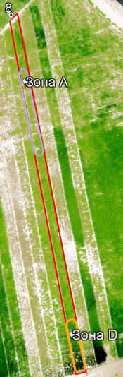
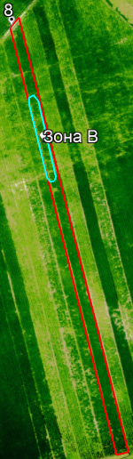

Дата съемки дроном: 15 июля 2022 года
Оценка текущей ситуации
Тип культуры: соя.
Сорт: Zamondosh (Замондош), средне-скороспелый
Площадь поля: 0,11 Га
Фаза вегетации: R1 (цветение)
| Однолетнее | Многолетнее | Деревья | |
|---|---|---|---|
| Этап вегетации | посадка | ||
| прорастание | всходы | сокодвижение | |
| набухание почек - начало бутонизации | набухание почек - начало бутонизации | набухание почек - начало бутонизации | |
| бутонизация | бутонизация | бутонизация | |
| начало цветения | начало цветения | начало цветения | |
| массовое цветение | массовое цветение | массовое цветение | |
| начало плодоношения | начало плодоношения | начало плодоношения | |
| массовое плодоношение - конец вегетации | массовое плодоношение - конец вегетации | массовое плодоношение - конец вегетации | |
| сбор урожая | сбор урожая | сбор урожая |
1. Состояние посевов Состояние посевов на делянке плохое, наблюдается значительная неравномерность развития. Посевы находятся в сильном угнетении, не развиваются и значительно отстают росте.
| Состояние посевов | Балл, оценка |
|---|---|
| 5-отлично | |
| 4-хорошо | |
| 3-удовлетворительно | |
| 2-плохо | |
| 1-очень плохо |
|  |  |
2. В северной части поля (Рис.11) культура не развивается, проблемная площадь составляет около 0,023 Га или 22% от площади поля (Зона А). Причина должна быть выяснена специалистом на месте.
3. Остальная часть посевов недоразвиты, площадь листовой поверхности незначительная и должна быть намного больше.
4. В северной части поля (Рис.12) на площади 0,02 Га или 21% от площади поля наблюдается дефицит азота 15-20% от нормы (Зона В).
5. Участок на юге (Рис.11) размером 0,018 Га или 17% (Зона D) от площади поля содержит посевы с хорошим развитием и показателями.
6. В целом данные воздушного мониторинга указывают на очень плохое, угнетённое состояние растительности на поле.
7. Посевы сильно угнетены и ослаблены, часть растений были заражены болезнью.
Рекомендации:
1. До сбора урожая не проводить мероприятий по внесению калия, фосфора, азота и средств по борьбе с сорняками.
2. После сбора урожая провести мониторинг поля для составления карты дифференцированного внесения удобрений для подготовки почвы к следующему посеву.
3. Осенью после сбора урожая необходимо внести до 50% от нормы азотных удобрений.
4. Весной обогатить почву серой путем внесения сульфата аммония.
5. Возможная дата сбора урожая: 18-20 августа